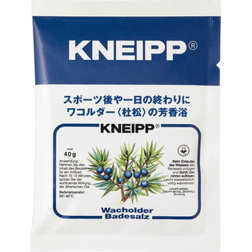

返回列表
产品名称：クナイプバスソルト ワコルダー

クナイプ・ジャパン クナイプバスソルト ワコルダー ４０ｇ
メーカー クナイプ・ジャパン
JANコード 4580294850124
商品の特徴
スポーツ後や一日の終わりにワコルダー＜杜松＞の芳香浴
成分・分量
塩化Na、香料、炭酸Na、オレオイルメチルタウリンNa、ポリソルベート20、黄202（1）
用法及び用量
浴そうのお湯（約200mL）にバスソルト1包（40g）をよくかきまぜながら溶かして入浴してください。